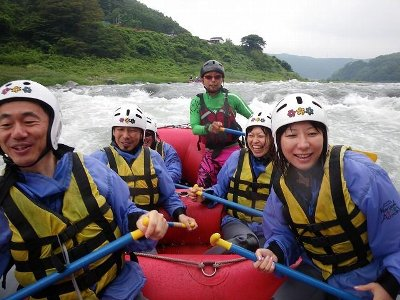
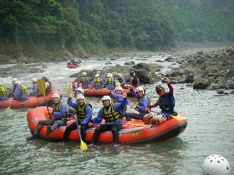
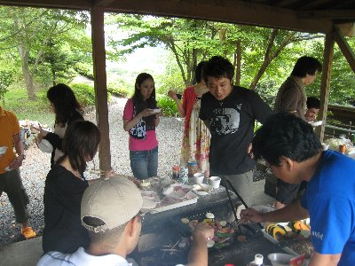
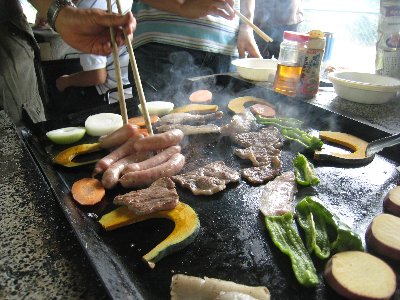

富士川ラフティング | 2009年7月 幹事：いづみさん |
|---|---|
| 恒例の富士川ラフティングに、今年はボクも参加しました〜 連日の雨で水量は期待が出来ます！ 今年もナチュラルアクションさんにお世話になりました。 今回は参加人数も多く、総勢15名？ 計３艇が我々のグループ（TMG含む）です。外のグループと合わせると７艇かな。さあ、ウダウダ書いていても仕方がありません。どーんと行きましょう！ | |
|  漕げ漕げ！ |  そりゃ〜突撃ー！ |
| 出発すると、早速初めの瀬が現れます。おお〜と、前回参加した時より、白波が立っている風ですね！。しかし、ここは楽々クリアーか。皆で掛け声掛けて、前漕ぎ前漕ぎ。波にあてられ艇がバウンド、そこはベテランインストラクターが、しっかり舵取り。（まあ、実際ボクらが漕いでも、あまり意味がないのだろう。全てはインストラクターの手によるのだ） 瀬を下っていると、前方の落ち込み部分に、前の艇が引っかかって止まってる。流れはその艇にまっしぐら。ボ〜ンって感じで艇と艇がぶつかり激しくバウンド。その拍子に私もドボンと流れの中に。 水量が多いおかげか、周りに岩もなく、無事水面に浮上。見ればボクのほかに二人も流されていた。いや〜気持ちいい〜。頭の中がスッキリするね。流れに任せつつ救助を待つ。 自艇に戻ると、すぐさま次の瀬が迫る。先ほどの瀬よりこちらのほうが大きいと感じるのだが、バウンドしながらも無事通過。 | |
 サイドからじゃー！ |  ぶつかるぞー！ |
| ここからしばらくは、ゆっくりとした流れ。艇からわざと落ちてみたり、流れに身を任せてみたり。 この先に大きな瀬は無いはずだが（小さな瀬は幾つか出てきます）、のはずだが、バランスが悪かったのか、他の艇でひっくり返って、乗り手が散り散りになっている場面もあったりして。 みんなで川を遊び尽くす感じで、ツアーは進みます。もうちょっと瀬が欲しいところだが、それでも、終って岸に上がると、気分がスッキリしていること間違いなしです。バカみたいに笑いたくなります。 ラフティングは水量に左右されるため、いつでも激しい訳ではないけれど、頭スッキリさせたい方は、一度チャレンジしてみては？ | |
|  ほっと一息〜 |  滝の下で（コレって生活用水じゃ無いよね？） |
| 終わった後は、場所を変えてバーベキュー大会。体をウンと動かし、アドレナリンを分泌したんで、食え〜て感じです！ 飲める人は呑め〜〜〜 | |
|  終わった後はバーベキュ〜 |  肉食うか？肉食え！ |
| 写真：ナチュラルアクション＆べっしー＆サムちゃん コメント：べっしー | |